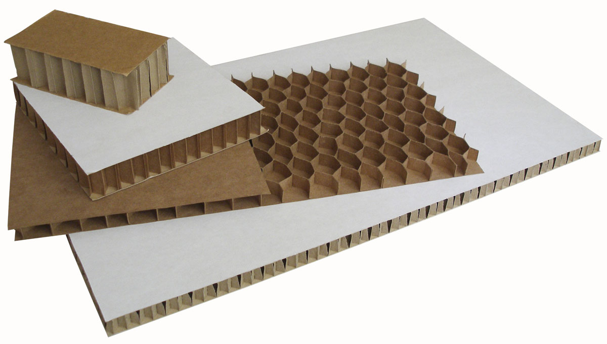

Сотовый картон
Сотовый картон - это жесткий и прочный материал, состоящий, как правило, из 2-х склеенных между собой слоев бумаги, между которыми располагаются соты. Высота ячейки (соты) может быть от 10 мм до 100 мм., диаметр ячейки от 8 мм до 30 мм. Сотовый картон подлежит вторичной переработке.

Цена от 28 Br